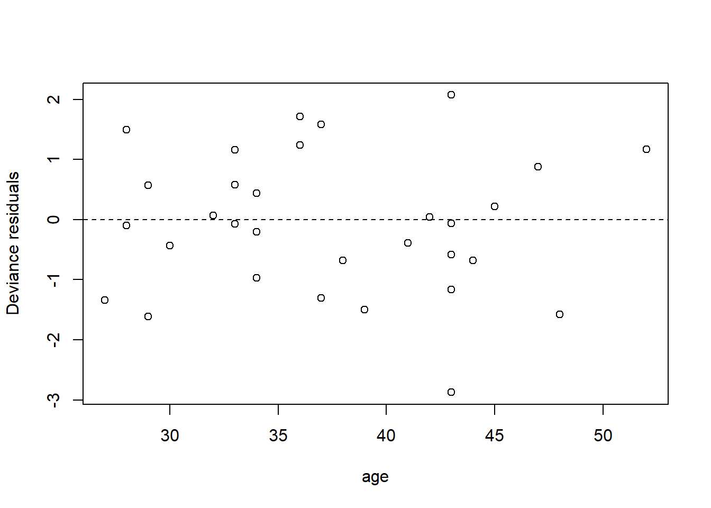
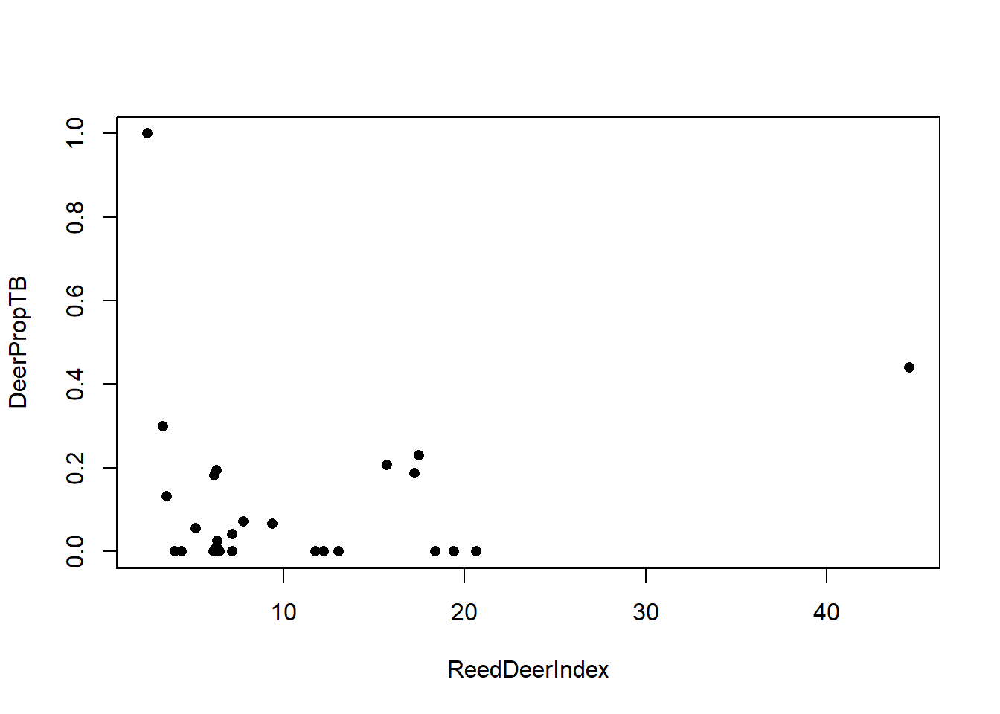
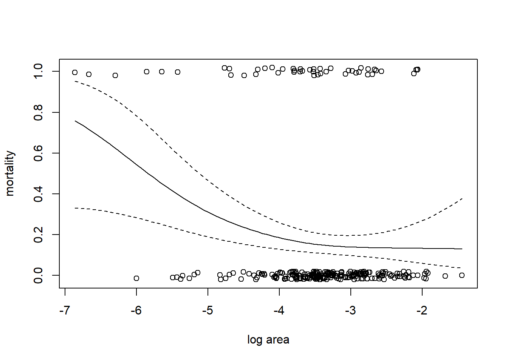

Chapter 7 Generalized linear models
7.1 GLMs: The big picture
Generalized linear models (GLMs)7 occupy a middle ground between general linear models (regression and ANOVA) and more all-encompassing maximum likelihood approaches. On the one hand, general linear models require strong assumptions about the distribution of the response (independence and normality). Those assumptions translate into lots of mathematical structure, and that structure in turn supports a powerful fitting algorithm that is easily automated by routines like lm. On the other hand, maximum likelihood is a more versatile approach that can in theory be applied to any parametric model one can propose. However, the versatility of likelihood comes with a cost, in that it requires the analyst to write their own model-fitting code from scratch for each model.
GLMs relax the assumption of normality (of the response) while retaining enough shared mathematical structure to support a common scheme for fitting the models by maximum likelihood. This common model-fitting scheme can be automated and packaged into user-friendly statistical software that allows analysts to fit these models without having to re-code the likelihood maximization from scratch each time.8 The common model-fitting scheme is also reasonably robust, and it typically doesn’t require the user to specify starting values (although sometimes starting values are necessary; see the discussion in Wood (2017).)
GLMs do not encompass all possible distributions for the response variable. Instead, GLMs can accommodate any response distribution in a group of probability distributions known as the “exponential family”.9 The exponential family of distributions includes many of the distributions that we encounter in practical data analysis, including Poisson, binomial, gamma, and beta distributions. The Gaussian distribution is included in the exponential family as well; thus we can think of GLMs as an extension of the general linear model. One notable distribution that is not part of the exponential family is the negative binomial distribution.
That said, a few caveats are worth bearing in mind. First, GLMs have their own specialized jargon. Personally, I find it hard to remember the jargon and have to re-learn it each time I encounter a GLM. Surely, analysts who use GLMs routinely will find the specialized jargon helpful. However, if you only use GLMs occasionally, you may need to relearn the jargon each time as well. If this is cumbersome, remember that fitting a GLM is ultimately an exercise in maximizing a likelihood, and you can always write customized likelihood-maximization code instead. Others will find the Bayesian route appealing here, because in a Bayesian context it is trivially simple to choose a non-Gaussian distribution for the response. Moreover, whether that distribution belongs to the exponential family is of no consequence in a Bayesian setting.
Secondly, the vast majority of GLMs encountered in practice are either logistic regression for binary responses and Poisson regression for count responses. (Every once in a blue moon, one might encounter a GLM with a Gamma- or beta-distributed response.) Most users are probably just as well served by learning logistic regression and Poisson regression as methods in their own right as they are by learning these methods as two particular instances of a broader class of GLMs.
Finally, whatever approach you choose — generalized linear modeling, direct likelihood maximization, or the Bayesian analysis — non-Gaussian distributions do not lend themselves to handling correlations among responses as readily as Gaussian distributions do. Thus, with data that are both correlated and non-Gaussian, one faces a choice: cope with the correlations and assume a Gaussian response, assume independence and cope with the non-Gaussian response, or try to cope with both the correlations and the non-Gaussian response at once. The former two options lend themselves to straightforward methods: mixed models in the first instance, and GLMs in the second. The last option — trying to do both — is not impossible, but it is substantially harder, and will take us into the domain of generalized linear mixed models (GLMMs), in which these notes will culminate.
7.2 Poisson regression
7.2.1 Horse-kick data revisited
To emphasize the connection between GLMs and likelihood approaches, we will take another look at fitting the horse-kick data in Chapters 1 and 2. To fit these data as an iid sample from a Poission distribution, we use a model that includes only an intercept and that uses an “indentity” link. We will discuss link functions later.
horse <- read.table("data/horse.txt", head = T)
fm1 <- glm(deaths ~ 1,
family = poisson(link = "identity"),
data = horse)
summary(fm1)##
## Call:
## glm(formula = deaths ~ 1, family = poisson(link = "identity"),
## data = horse)
##
## Coefficients:
## Estimate Std. Error z value Pr(>|z|)
## (Intercept) 0.70 0.05 14 <2e-16 ***
## ---
## Signif. codes: 0 '***' 0.001 '**' 0.01 '*' 0.05 '.' 0.1 ' ' 1
##
## (Dispersion parameter for poisson family taken to be 1)
##
## Null deviance: 323.23 on 279 degrees of freedom
## Residual deviance: 323.23 on 279 degrees of freedom
## AIC: 630.31
##
## Number of Fisher Scoring iterations: 3Notice that the estimate of the intercept is exactly the same as the MLE of the intercept that we obtained from maximizing the likelihood directly in section 1.2. Notice also that the standard error is exactly the same as the value that we obtained by the quadratic approximation in section 2.3.
7.2.2 Elephant matings
We will begin with an example of Poisson regression. These data are originally from Poole (1989), and were analyzed in Ramsey and Schafer (2002). They describe an observational study of 41 male elephants over 8 years at Amboseli National Park in Kenya. Each record in this data set gives the age of a male elephant at the beginning of a study and the number of successful matings for the elephant over the study’s duration. The number of matings is a count variable. Our goal is to characterize how the number of matings is related to the elephant’s age. We’ll start by fitting a model with the canonical log link.
## age matings
## 1 27 0
## 2 28 1
## 3 28 1
## 4 28 1
## 5 28 3
## 6 29 0
fm1 <- glm(matings ~ age,
family = poisson(link = "log"),
data = elephant) # log link is the default
summary(fm1)##
## Call:
## glm(formula = matings ~ age, family = poisson(link = "log"),
## data = elephant)
##
## Coefficients:
## Estimate Std. Error z value Pr(>|z|)
## (Intercept) -1.58201 0.54462 -2.905 0.00368 **
## age 0.06869 0.01375 4.997 5.81e-07 ***
## ---
## Signif. codes: 0 '***' 0.001 '**' 0.01 '*' 0.05 '.' 0.1 ' ' 1
##
## (Dispersion parameter for poisson family taken to be 1)
##
## Null deviance: 75.372 on 40 degrees of freedom
## Residual deviance: 51.012 on 39 degrees of freedom
## AIC: 156.46
##
## Number of Fisher Scoring iterations: 5Thus the so-called pseudo-\(R^2\) for the model with the log link is \[ \mathrm{pseudo}-R^2 = 1 - \frac{51.012}{75.372} = 32.3\% \] We can visualize the fit by plotting a best-fitting line with a 95% confidence interval. Because the scale parameter is not estimated here, we will use a critical value from a standard normal distribution. Later, when we estimate the scale parameter based on data, we will use a critical value from a \(t\)-distribution instead.
new.data <- data.frame(age = seq(from = min(elephant$age),
to = max(elephant$age),
length = 100))
predict.fm1 <- predict(fm1, newdata = new.data, type = "response", se.fit = TRUE)
with(elephant, plot(matings ~ age))
lines(x = new.data$age, y = predict.fm1$fit, col = "red")
# add lines for standard errors
lines(x = new.data$age,
y = predict.fm1$fit - 1.96 * predict.fm1$se.fit,
col = "red",
lty = "dashed")
lines(x = new.data$age,
y = predict.fm1$fit + 1.96 * predict.fm1$se.fit,
col = "red",
lty = "dashed")
While the canonical link is a natural starting point, we are free to try other link functions as well. Below, we try the identity link and plot the fit.
##
## Call:
## glm(formula = matings ~ age, family = poisson(link = "identity"),
## data = elephant)
##
## Coefficients:
## Estimate Std. Error z value Pr(>|z|)
## (Intercept) -4.55205 1.33916 -3.399 0.000676 ***
## age 0.20179 0.04023 5.016 5.29e-07 ***
## ---
## Signif. codes: 0 '***' 0.001 '**' 0.01 '*' 0.05 '.' 0.1 ' ' 1
##
## (Dispersion parameter for poisson family taken to be 1)
##
## Null deviance: 75.372 on 40 degrees of freedom
## Residual deviance: 50.058 on 39 degrees of freedom
## AIC: 155.5
##
## Number of Fisher Scoring iterations: 5predict.fm2 <- predict(fm2, newdata = new.data, type = "response", se.fit = TRUE)
with(elephant, plot(matings ~ age))
lines(x = new.data$age, y = predict.fm2$fit, col = "blue")
lines(x = new.data$age,
y = predict.fm2$fit - 1.96 * predict.fm2$se.fit,
col = "blue",
lty = "dashed")
lines(x = new.data$age,
y = predict.fm2$fit + 1.96 * predict.fm2$se.fit,
col = "blue",
lty = "dashed")
Note that the choice of the link function has a substantial impact on the shape of the fit. The canonical (log) link suggests that the average number of matings increases with age at an accelerating rate, while the identity link suggests that the average number of matings increases steadily with age. The AIC favors the identity link here.
We can also have a look at the residuals to see if they suggest any model deficiencies. In general, we prefer the deviance residuals, so we will look at them.
plot(x = elephant$age,
y = residuals(fm2, type = "deviance"),
xlab = "age",
ylab = "Deviance residuals")
abline(h = 0, lty = "dashed")
The residuals do not suggest any deficiency in the fit.
For this fit, the residual deviance suggests a small amount of overdispersion. To be on the safe side, we can fit a quasi-Poisson model in which the scale (overdispersion) parameter is estimated from the data. Note that when we estimate the overdispersion parameter, the estimates of the model parameters do not change, but their standard errors increase. Consequently, the uncertainty in the fit increases as well. In this case, however, the increase is so slight that it is barely noticeable.
##
## Call:
## glm(formula = matings ~ age, family = quasipoisson(link = "identity"),
## data = elephant)
##
## Coefficients:
## Estimate Std. Error t value Pr(>|t|)
## (Intercept) -4.55205 1.42164 -3.202 0.00272 **
## age 0.20179 0.04271 4.725 2.97e-05 ***
## ---
## Signif. codes: 0 '***' 0.001 '**' 0.01 '*' 0.05 '.' 0.1 ' ' 1
##
## (Dispersion parameter for quasipoisson family taken to be 1.126975)
##
## Null deviance: 75.372 on 40 degrees of freedom
## Residual deviance: 50.058 on 39 degrees of freedom
## AIC: NA
##
## Number of Fisher Scoring iterations: 5predict.fm3 <- predict(fm3, newdata = new.data, type = "response", se.fit = TRUE)
with(elephant, plot(matings ~ age))
lines(x = new.data$age, y = predict.fm3$fit, col = "blue")
lines(x = new.data$age,
y = predict.fm3$fit + qt(0.025, df = 39) * predict.fm3$se.fit,
col = "blue",
lty = "dashed")
lines(x = new.data$age,
y = predict.fm3$fit + qt(0.975, df = 39) * predict.fm3$se.fit,
col = "blue",
lty = "dashed")
As an alternative, we could fit a model that uses a negative binomial distribution for the response. Negative binomial distributions belong to the exponential family, so we can fit them using the GLM framework. However, the authors of glm did not include a negative binomial family in their initial code. Venables & Ripley’s MASS package includes a program called glm.nb which is specifically designed for negative binomial responses. MASS::glm.nb uses the parameterization familiar to ecologists, although they use the parameter \(\theta\) instead of \(k\). So, in their notation, if \(y \sim \mathrm{NB}(\mu, \theta)\), then \(\mathrm{Var}(y) = \mu + \mu^2/\theta\).
## Loading required package: MASS##
## Call:
## glm.nb(formula = matings ~ age, data = elephant, link = identity,
## init.theta = 15.80269167)
##
## Coefficients:
## Estimate Std. Error z value Pr(>|z|)
## (Intercept) -4.56939 1.45770 -3.135 0.00172 **
## age 0.20232 0.04428 4.569 4.9e-06 ***
## ---
## Signif. codes: 0 '***' 0.001 '**' 0.01 '*' 0.05 '.' 0.1 ' ' 1
##
## (Dispersion parameter for Negative Binomial(15.8027) family taken to be 1)
##
## Null deviance: 64.836 on 40 degrees of freedom
## Residual deviance: 43.214 on 39 degrees of freedom
## AIC: 156.87
##
## Number of Fisher Scoring iterations: 1
##
##
## Theta: 15.8
## Std. Err.: 23.0
##
## 2 x log-likelihood: -150.872predict.fm4 <- predict(fm4, newdata = new.data, type = "response", se.fit = TRUE)
with(elephant, plot(matings ~ age))
lines(x = new.data$age, y = predict.fm4$fit, col = "blue")
lines(x = new.data$age,
y = predict.fm4$fit + 1.96 * predict.fm4$se.fit,
col = "blue",
lty = "dashed")
lines(x = new.data$age,
y = predict.fm4$fit - 1.96 * predict.fm4$se.fit,
col = "blue",
lty = "dashed")
Notice that \(\hat{\theta} = 15.8\), again indicating that the extra-Poisson variation is mild. Notice also that the error bounds on the fitted curve are ever so slightly larger than the error bounds from the Poisson fit, and nearly identical to the error bounds from the quasi-Poisson fit.
–>
7.3 Binary responses
We generally distinguish between two types of data with binary responses: Data in which each individual record is a separate a binary response, and data in which each record consists of a group of binary observations. The same methods can be used for either type of data. We will begin by studying a data set with individual binary responses, and then move to grouped binary responses.
7.3.1 Individual binary responses: TB in boar
To illustrate individual binary data, we will use a data set analyzed by Zuur et al. (2009) in their Ch. 10. As explained by Zuur et al., these data describe the incidence of “tuberculosis-like lesions in wild boar Sus scrofa” in southern Spain, and were originally collected by Vicente et al. (2006). The potential explanatory variables in the data set include a measure of the animal’s size, it’s sex, and a grouping into one of four age classes.
Preparatory work:
boar <- read.table("data/boar.txt", head = T)
# remove incomplete records
boar <- na.omit(boar)
# convert sex to a factor
boar$SEX <- as.factor(boar$SEX)
names(boar) <- c("tb", "sex", "age", "length")
summary(boar)## tb sex age length
## Min. :0.0000 1:206 Min. :1.000 Min. : 46.5
## 1st Qu.:0.0000 2:288 1st Qu.:3.000 1st Qu.:107.0
## Median :0.0000 Median :3.000 Median :122.0
## Mean :0.4575 Mean :3.142 Mean :117.3
## 3rd Qu.:1.0000 3rd Qu.:4.000 3rd Qu.:130.4
## Max. :1.0000 Max. :4.000 Max. :165.0We’ll fit the usual logistic regression model first, considering only the animal’s size as a predictor. Size in this case is a measure of the length of the animal, in cm.
##
## Call:
## glm(formula = tb ~ length, family = binomial(link = "logit"),
## data = boar)
##
## Coefficients:
## Estimate Std. Error z value Pr(>|z|)
## (Intercept) -4.137107 0.695381 -5.949 2.69e-09 ***
## length 0.033531 0.005767 5.814 6.09e-09 ***
## ---
## Signif. codes: 0 '***' 0.001 '**' 0.01 '*' 0.05 '.' 0.1 ' ' 1
##
## (Dispersion parameter for binomial family taken to be 1)
##
## Null deviance: 681.25 on 493 degrees of freedom
## Residual deviance: 641.23 on 492 degrees of freedom
## AIC: 645.23
##
## Number of Fisher Scoring iterations: 4with(boar, plot(tb ~ length))
# add a line for the fitted probabilities of tb
new.data <- data.frame(length = seq(from = min(boar$length),
to = max(boar$length),
length = 100))
predict.fm1 <- predict(fm1, newdata = new.data, type = "response", se.fit = TRUE)
lines(x = new.data$length, y = predict.fm1$fit, col = "red")
# add lines for standard errors
# use critical value from z distribution here because
# the scale parameter is not estimated
lines(x = new.data$length,
y = predict.fm1$fit - 1.96 * predict.fm1$se.fit,
col = "red",
lty = "dashed")
lines(x = new.data$length,
y = predict.fm1$fit + 1.96 * predict.fm1$se.fit,
col = "red",
lty = "dashed")
Regression coefficients in logistic regression can be a bit hard to interpret. One interpretation flows from exponentiating the regression coefficient to obtain an odds ratio. For the boar data, the regression coefficient of 0.0335 corresponds to an odds ratio of \(e^{0.0335}\) = 1.034. This means that for two boars that differ by one cm in length, the larger boar’s odds of having a TB-like lesion will be 1.034 times the smaller boar’s odds of having such a lesion.
Overdispersion is typically not an issue with individual binary response data. Nonetheless, the pseudo-\(R^2\) here is fairly low. We can try the probit and complementary log-log links to see if we obtain a better fit:
# probit link
fm1a <- glm(tb ~ length, family = binomial(link = "probit"), data = boar)
# complementary log-log link
fm1b <- glm(tb ~ length, family = binomial(link = "cloglog"), data = boar)
AIC(fm1, fm1a, fm1b)## df AIC
## fm1 2 645.2265
## fm1a 2 645.2665
## fm1b 2 645.6100# make a plot to compare the fits with the different links
predict.fm1a <- predict(fm1a, newdata = new.data, type = "response", se.fit = TRUE)
predict.fm1b <- predict(fm1b, newdata = new.data, type = "response", se.fit = TRUE)
with(boar, plot(tb ~ length))
lines(x = new.data$length, y = predict.fm1$fit, col = "red", lwd = 2)
lines(x = new.data$length, y = predict.fm1a$fit, col = "blue", lwd = 2)
lines(x = new.data$length, y = predict.fm1b$fit, col = "forestgreen", lwd = 2)
legend("left",
leg = c("logit", "probit", "cloglog"),
col = c("red", "blue", "forestgreen"),
pch = 16)
The logit and probit links are nearly identical. The complementary log-log link differs slightly, but the logit link is AIC-best.
Now we’ll try adding sex and age class as predictors.
# fit a model with sex, age (as a categorical predictor) and their interaction
fm2 <- glm(tb ~ length + sex * as.factor(age),
family = binomial,
data = boar)
summary(fm2)##
## Call:
## glm(formula = tb ~ length + sex * as.factor(age), family = binomial,
## data = boar)
##
## Coefficients:
## Estimate Std. Error z value Pr(>|z|)
## (Intercept) -16.55356 724.50177 -0.023 0.982
## length 0.01840 0.01253 1.469 0.142
## sex2 14.19739 724.50190 0.020 0.984
## as.factor(age)2 13.83446 724.50169 0.019 0.985
## as.factor(age)3 14.31136 724.50191 0.020 0.984
## as.factor(age)4 14.68141 724.50219 0.020 0.984
## sex2:as.factor(age)2 -14.53254 724.50204 -0.020 0.984
## sex2:as.factor(age)3 -14.36861 724.50196 -0.020 0.984
## sex2:as.factor(age)4 -14.53354 724.50196 -0.020 0.984
##
## (Dispersion parameter for binomial family taken to be 1)
##
## Null deviance: 681.25 on 493 degrees of freedom
## Residual deviance: 635.43 on 485 degrees of freedom
## AIC: 653.43
##
## Number of Fisher Scoring iterations: 14Notice the gigantic standard errors on some of the parameter estimates. These large standard errors indicate that the likelihood is flat, and that the MLEs cannot be found. In this case, the likelihood surface is flat because because none of the individuals with and are infected. We can see this by tallying the frequency of infection by sex and age class:
## , , sex = 1
##
## age
## tb 1 2 3 4
## 0 4 37 37 28
## 1 0 14 34 52
##
## , , sex = 2
##
## age
## tb 1 2 3 4
## 0 7 40 62 53
## 1 2 11 48 65Because none of the individuals with and are infected, the likelihood surface flattens out as the parameter corresponding to this demographic group becomes increasingly negative. (Formally speaking, the MLE of the log odds of infection for this group is \(-\infty\), but no numerical optimization scheme will find this value.) This phenomenon is known as “complete separation”. Although it’s only the and group that is problematic here, in this case that is the group that is coded as the baseline, so the parameters for all the other groups are defined relative to it, and thus are problematic as well.
There are several possible remedies here. The first is to try to reduce the number of parameters in the model, perhaps by eliminating the interaction between sex and age class.
# fit a model with sex, age (as a categorical predictor) and their interaction
fm3 <- glm(tb ~ length + sex + as.factor(age),
family = binomial,
data = boar)
summary(fm3)##
## Call:
## glm(formula = tb ~ length + sex + as.factor(age), family = binomial,
## data = boar)
##
## Coefficients:
## Estimate Std. Error z value Pr(>|z|)
## (Intercept) -2.67730 1.07306 -2.495 0.0126 *
## length 0.01959 0.01237 1.584 0.1133
## sex2 -0.24297 0.19354 -1.255 0.2093
## as.factor(age)2 -0.19847 0.92641 -0.214 0.8304
## as.factor(age)3 0.33908 1.06938 0.317 0.7512
## as.factor(age)4 0.59041 1.20582 0.490 0.6244
## ---
## Signif. codes: 0 '***' 0.001 '**' 0.01 '*' 0.05 '.' 0.1 ' ' 1
##
## (Dispersion parameter for binomial family taken to be 1)
##
## Null deviance: 681.25 on 493 degrees of freedom
## Residual deviance: 637.41 on 488 degrees of freedom
## AIC: 649.41
##
## Number of Fisher Scoring iterations: 4A second option is to use so-called ``exact’’ methods for inference. There doesn’t appear to be a good package available for implementing these methods in R. Other software packages might be necessary.
7.3.2 Grouped binary data: TB in red deer
For an example with grouped binary data, we will consider a second data set from Vicente et al. (2006), which is also discussed in Zuur et al. (2009). This data set gives the prevalence of tuberculosis infection in red deer in southern Spain at several different estates. Several deer were sampled at each estate, and the sampled deer were tested for tuberculosis. We’ll import the data first and do a bit of housekeeping.
The data contain several possible covariates. Here, we will just inspect the relationship between the prevalence of TB and a covariate called ReedDeerIndex. (Presumably the name of the covariate is a typo, and this is instead an index of the abundance of red deer.) In these data, the variable DeerPosTB gives the number of deer that tested positive for TB at each estate, and the variable DeerSampledTB gives the total number of deer sampled at each estate.
deer$DeerPropTB <- with(deer, DeerPosTB / DeerSampledTB)
with(deer, plot(DeerPropTB ~ ReedDeerIndex, pch = 16))
fm1 <- glm(cbind(DeerPosTB, DeerSampledTB - DeerPosTB) ~ ReedDeerIndex,
family = binomial(link = "logit"),
data = deer)
summary(fm1)##
## Call:
## glm(formula = cbind(DeerPosTB, DeerSampledTB - DeerPosTB) ~ ReedDeerIndex,
## family = binomial(link = "logit"), data = deer)
##
## Coefficients:
## Estimate Std. Error z value Pr(>|z|)
## (Intercept) -2.92645 0.20380 -14.359 < 2e-16 ***
## ReedDeerIndex 0.05952 0.01119 5.321 1.03e-07 ***
## ---
## Signif. codes: 0 '***' 0.001 '**' 0.01 '*' 0.05 '.' 0.1 ' ' 1
##
## (Dispersion parameter for binomial family taken to be 1)
##
## Null deviance: 113.274 on 25 degrees of freedom
## Residual deviance: 87.662 on 24 degrees of freedom
## AIC: 131.7
##
## Number of Fisher Scoring iterations: 5Note that the model formula gives the response variable as a 2-column matrix, where the columns gives the counts of each outcome type.
With grouped binomial data, overdispersion is again a possibility. Notice that the residual deviance is much greater than its corresponding df, suggesting that these data show substantial extra-binomial variation. Thus we will fit a quasibinomial model to account for the extra-binomial variation.
fm2 <- glm(cbind(DeerPosTB, DeerSampledTB - DeerPosTB) ~ ReedDeerIndex,
family = quasibinomial(link = "logit"),
data = deer)
summary(fm2)##
## Call:
## glm(formula = cbind(DeerPosTB, DeerSampledTB - DeerPosTB) ~ ReedDeerIndex,
## family = quasibinomial(link = "logit"), data = deer)
##
## Coefficients:
## Estimate Std. Error t value Pr(>|t|)
## (Intercept) -2.92645 0.40220 -7.276 1.62e-07 ***
## ReedDeerIndex 0.05952 0.02208 2.696 0.0126 *
## ---
## Signif. codes: 0 '***' 0.001 '**' 0.01 '*' 0.05 '.' 0.1 ' ' 1
##
## (Dispersion parameter for quasibinomial family taken to be 3.894694)
##
## Null deviance: 113.274 on 25 degrees of freedom
## Residual deviance: 87.662 on 24 degrees of freedom
## AIC: NA
##
## Number of Fisher Scoring iterations: 5Accounting for the extra-binomial variation has nearly doubled the standard error of the slope on the logit scale. Thus the naive characterization of the uncertainty in the estimate was far too small. We can see the effect of accounting for the overdispersion by comparing the confidence envelopes for the respective fits.
new.data <- data.frame(ReedDeerIndex = seq(from = min(deer$ReedDeerIndex),
to = max(deer$ReedDeerIndex),
length = 100))
predict.fm1 <- predict(fm1, newdata = new.data, type = "response", se.fit = TRUE)
predict.fm2 <- predict(fm2, newdata = new.data, type = "response", se.fit = TRUE)
with(deer, plot(DeerPropTB ~ ReedDeerIndex, pch = 16))
lines(x = new.data$ReedDeerIndex, y = predict.fm1$fit)
# use critical value from z distribution when the scale parameter is assumed known
# use t-distribution when the scale parameter is estimated
lines(x = new.data$ReedDeerIndex,
y = predict.fm1$fit - 1.96 * predict.fm1$se.fit,
col = "red",
lty = "dashed")
lines(x = new.data$ReedDeerIndex,
y = predict.fm1$fit + 1.96 * predict.fm1$se.fit,
col = "red",
lty = "dashed")
lines(x = new.data$ReedDeerIndex,
y = predict.fm2$fit + qt(0.025, df = 24) * predict.fm2$se.fit,
col = "blue",
lty = "dashed")
lines(x = new.data$ReedDeerIndex,
y = predict.fm2$fit + qt(0.975, df = 24) * predict.fm2$se.fit,
col = "blue",
lty = "dashed")
legend("top", pch = 16, col = c("blue", "red"), leg = c("quasibinomial", "naive"))
7.4 Zero-adjusted models for count data
In count data, the frequency of zeros often differs from what the standard Poisson or negative binomial distributions would predict. This occurs because the processes that lead to zero counts are often separate from the processes that govern the intensity of non-zero counts. For example, when counting parasite loads of animals, one process may determine if an individual animal is infected at all, and a second process may determine the intensity of the parasite load for those animals that are infected. This section discusses models for count data in which the proportion of zeros is modeled separately from the rest of the distribution. Any of these models may be paired with Poisson or negative binomial models for the non-zero counts.
7.4.1 Zero-truncated models
Zero-truncated distributions are simply those that condition on the count variable being greater than 0. They are appropriate when the sampling procedure makes zeros unobservable. Zero-truncated Poisson and negative binomial distributions are available as something of a side benefit the R library VGAM (an acronym for vector generalized additive models). This package provides the function vglm (a version of glm that allows for vector-valued responses), which in turn accommodates the distribution families pospoisson and posnegbinomial. The “pos” portion of each refers to the fact that the counts must be strictly positive.
We illustrate the use of a zero-truncated distribution with a species-abundance data set for butterflies provided in the VGAM package. The description of the data set in VGAM reads: “About 3300 individual butterflies were caught in Malaya by naturalist Corbet trapping butterflies. They were classified to about 500 species.” The data give the frequencies in a species abundance distribution.
## ofreq species
## 1 1 118
## 2 2 74
## 3 3 44
## 4 4 24
## 5 5 29
## 6 6 22We will fit a zero-truncated negative binomial distribution to these data, and compare the fitted zero-truncated distribution to the data.
7.4.2 Zero-inflated models
As the name suggests, zero-inflated (henceforth ZI) models are appropriate when zeros are more frequent than the distribution of the non-zero counts would suggest. ZI models have two components. In the “zero-inflation” component, a logistic regression (or some other generalized linear model for a binary response) captures whether the response is a “false” zero or a realization from a proper count distribution. In the “count” component, a generalized linear model for count data (such as Poisson regression) is used to model the distribution of the non-false-zero counts. The ZI model can be motivated by envisioning that the data arise from a combination of two separate mechanisms: a first mechanism that determines whether or not the count is a “false” zero, and a second that determines the count if it is not a false zero. In ecology, the zero-inflation component might correspond to (true) presence vs. absence, and the count component might correspond to the detected intensity conditional on presence.
To illustrate ZI models, we will use the cod parasite data described in \(\S\) 11.3.2 of Zuur et al. (2009). These data are counts of the number of trypanosome blood parasites in individual cod, and were initially reported in Hemmingsen et al. (2005). First we load the data and do some housekeeping.
cod <- read.table("data/ParasiteCod.txt", head = T)
# remove observations with missing data
cod <- na.omit(cod)
summary(cod)## Sample Intensity Prevalence Year
## Min. : 1.0 Min. : 0.000 Min. :0.0000 Min. :1999
## 1st Qu.: 299.5 1st Qu.: 0.000 1st Qu.:0.0000 1st Qu.:1999
## Median : 598.0 Median : 0.000 Median :0.0000 Median :2000
## Mean : 613.7 Mean : 6.209 Mean :0.4534 Mean :2000
## 3rd Qu.: 955.5 3rd Qu.: 4.000 3rd Qu.:1.0000 3rd Qu.:2001
## Max. :1254.0 Max. :257.000 Max. :1.0000 Max. :2001
## Depth Weight Length Sex
## Min. : 50.0 Min. : 34 Min. : 17.00 Min. :0.000
## 1st Qu.:110.0 1st Qu.: 769 1st Qu.: 44.00 1st Qu.:1.000
## Median :180.0 Median :1446 Median : 54.00 Median :1.000
## Mean :176.3 Mean :1718 Mean : 53.53 Mean :1.427
## 3rd Qu.:236.0 3rd Qu.:2232 3rd Qu.: 62.00 3rd Qu.:2.000
## Max. :293.0 Max. :9990 Max. :101.00 Max. :2.000
## Stage Age Area
## Min. :0.000 Min. : 0.000 Min. :1.000
## 1st Qu.:1.000 1st Qu.: 3.000 1st Qu.:2.000
## Median :1.000 Median : 4.000 Median :3.000
## Mean :1.426 Mean : 4.118 Mean :2.568
## 3rd Qu.:2.000 3rd Qu.: 5.000 3rd Qu.:3.000
## Max. :4.000 Max. :10.000 Max. :4.000There are a large number of potential predictors. Following the analysis in Zuur et al., we will focus on the effects of length (a measure of the fish’s size), year (which we will treat as a categorical predictor for flexibility), and “area”, a categorical predictor for one of four areas in which the fish was sampled. Before beginning, we will plot the data. In the plot below, each row of the plot corresponds to a year, and each column (unlabeled) corresponds to one of the four areas, going from area 1 (the leftmost column) to area 4 (the rightmost column). Because most of the parasite loads are zero or close to zero, we plot parasite load on a log(y + 1) scale.
par(mfrow = c(3, 4), mar = c(2, 2, 1, 1), oma = c(3, 7, 0, 0), las = 1)
for (i in unique(cod$Year)) {
for (j in sort(unique(cod$Area))) {
with(subset(cod, Year == i & Area == j),
plot(log(Intensity + 1) ~ Length, xlim = range(cod$Length), ylim = log(range(cod$Intensity) + 1),
xlab = "", ylab = "", yaxt = "n"))
axis(2, at = log(c(0, 10, 100) + 1), lab = c(0, 10, 100))
if (j == 1) mtext(i, side = 2, line = 3)
}
}
mtext("length", side = 1, outer = T, line = 2)
mtext("parasite intensity", side = 2, outer = T, line = 5, las = 0)With ZI models, one can use separate model combinations of predictors for the two components. Indeed, if we think of the two components as capturing two different natural processes, then there is no reason that the predictors should have the same affect on both components. Following Zuur et al., however, we will start with a ZINB model that includes length, year, area, and an interaction between year and area for both components. Because both components are generalized linear models, both include a link function. Here, we will use the default logit link for the zero-inflation component and log link for the count component.
To fit ZI models, we will use the pscl library from R. The name pscl is an acronym for political science computing laboratory. The pscl library includes functions for ZI poisson and negative binomial models (henceforth abbreviated ZIP and ZINB models).
## Loading required package: pscl## Classes and Methods for R originally developed in the
## Political Science Computational Laboratory
## Department of Political Science
## Stanford University (2002-2015),
## by and under the direction of Simon Jackman.
## hurdle and zeroinfl functions by Achim Zeileis.formula.1 <- formula(Intensity ~ Length + as.factor(Year) * as.factor(Area))
cod.nb.fm1 <- zeroinfl(formula.1, data = cod, dist = "negbin")
summary(cod.nb.fm1)##
## Call:
## zeroinfl(formula = formula.1, data = cod, dist = "negbin")
##
## Pearson residuals:
## Min 1Q Median 3Q Max
## -0.6142 -0.4429 -0.3581 -0.1252 11.4530
##
## Count model coefficients (negbin with log link):
## Estimate Std. Error z value Pr(>|z|)
## (Intercept) 3.733903 0.344397 10.842 < 2e-16 ***
## Length -0.036410 0.005108 -7.128 1.02e-12 ***
## as.factor(Year)2000 0.063889 0.295638 0.216 0.82890
## as.factor(Year)2001 -0.939151 0.606059 -1.550 0.12124
## as.factor(Area)2 0.197774 0.329133 0.601 0.54791
## as.factor(Area)3 -0.646729 0.277792 -2.328 0.01991 *
## as.factor(Area)4 0.707498 0.252265 2.805 0.00504 **
## as.factor(Year)2000:as.factor(Area)2 -0.653991 0.535416 -1.221 0.22191
## as.factor(Year)2001:as.factor(Area)2 0.967267 0.718168 1.347 0.17803
## as.factor(Year)2000:as.factor(Area)3 1.024962 0.429598 2.386 0.01704 *
## as.factor(Year)2001:as.factor(Area)3 1.002701 0.677504 1.480 0.13888
## as.factor(Year)2000:as.factor(Area)4 0.534532 0.414974 1.288 0.19771
## as.factor(Year)2001:as.factor(Area)4 0.855163 0.654396 1.307 0.19128
## Log(theta) -0.966623 0.096344 -10.033 < 2e-16 ***
##
## Zero-inflation model coefficients (binomial with logit link):
## Estimate Std. Error z value Pr(>|z|)
## (Intercept) 0.19091 0.78132 0.244 0.806971
## Length -0.03884 0.01203 -3.227 0.001249 **
## as.factor(Year)2000 -1.07170 2.00018 -0.536 0.592094
## as.factor(Year)2001 3.29315 0.71042 4.636 3.56e-06 ***
## as.factor(Area)2 2.01366 0.57288 3.515 0.000440 ***
## as.factor(Area)3 1.90526 0.54987 3.465 0.000530 ***
## as.factor(Area)4 -0.73617 0.86221 -0.854 0.393206
## as.factor(Year)2000:as.factor(Area)2 0.46538 2.07885 0.224 0.822864
## as.factor(Year)2001:as.factor(Area)2 -3.20741 0.83595 -3.837 0.000125 ***
## as.factor(Year)2000:as.factor(Area)3 -0.79455 2.15765 -0.368 0.712690
## as.factor(Year)2001:as.factor(Area)3 -3.50408 0.82999 -4.222 2.42e-05 ***
## as.factor(Year)2000:as.factor(Area)4 -13.57000 1509.57406 -0.009 0.992828
## as.factor(Year)2001:as.factor(Area)4 -2.91050 1.10456 -2.635 0.008414 **
## ---
## Signif. codes: 0 '***' 0.001 '**' 0.01 '*' 0.05 '.' 0.1 ' ' 1
##
## Theta = 0.3804
## Number of iterations in BFGS optimization: 53
## Log-likelihood: -2450 on 27 DfThe neatly organized output gives coefficients for each component of the model, with the count component presented first and the zero-inflation component presented second. The output for the zero-inflation component shows a very large standard error associated with the coefficient for area 4 in the year 2000. Let’s take a look at the frequency of zeros, as broken down by year and area.
## , , = FALSE
##
## Area
## Year 1 2 3 4
## 1999 57 65 121 34
## 2000 16 31 32 6
## 2001 63 72 112 42
##
## , , = TRUE
##
## Area
## Year 1 2 3 4
## 1999 89 27 45 69
## 2000 39 18 43 44
## 2001 7 34 45 80We see that there are only a few zeros in area 4 for 2000. Thus, the zero-inflation component is trying to fit a zero probability of zero inflation for area 4 in year 2000, leading to complete separation. We need to reduce the number of parameters somehow. Lacking any better ideas, we’ll follow Zuur et al. and remove the interaction between year and area for the zero-inflation portion of the model. To do so, we need a model formula that differs between the two model components. In pscl, we implement this model by providing a model formula where the differing predictor combinations for the two components are separated by a vertical bar.
formula.2 <- formula(Intensity ~ Length + as.factor(Year) * as.factor(Area) | Length
+ as.factor(Year) + as.factor(Area))
cod.nb.fm2 <- zeroinfl(formula.2, data = cod, dist = "negbin")
summary(cod.nb.fm2)##
## Call:
## zeroinfl(formula = formula.2, data = cod, dist = "negbin")
##
## Pearson residuals:
## Min 1Q Median 3Q Max
## -0.5911 -0.4480 -0.3794 -0.1258 12.0794
##
## Count model coefficients (negbin with log link):
## Estimate Std. Error z value Pr(>|z|)
## (Intercept) 3.78614 0.34093 11.105 < 2e-16 ***
## Length -0.03669 0.00502 -7.309 2.70e-13 ***
## as.factor(Year)2000 0.03438 0.29188 0.118 0.90625
## as.factor(Year)2001 -2.32201 0.38125 -6.090 1.13e-09 ***
## as.factor(Area)2 0.12404 0.32906 0.377 0.70620
## as.factor(Area)3 -0.82582 0.27838 -2.966 0.00301 **
## as.factor(Area)4 0.65502 0.25266 2.592 0.00953 **
## as.factor(Year)2000:as.factor(Area)2 -0.75546 0.50817 -1.487 0.13711
## as.factor(Year)2001:as.factor(Area)2 2.39045 0.52066 4.591 4.41e-06 ***
## as.factor(Year)2000:as.factor(Area)3 1.21458 0.42003 2.892 0.00383 **
## as.factor(Year)2001:as.factor(Area)3 2.52719 0.45772 5.521 3.37e-08 ***
## as.factor(Year)2000:as.factor(Area)4 0.59338 0.41572 1.427 0.15348
## as.factor(Year)2001:as.factor(Area)4 2.23075 0.44603 5.001 5.69e-07 ***
## Log(theta) -1.01443 0.09655 -10.507 < 2e-16 ***
##
## Zero-inflation model coefficients (binomial with logit link):
## Estimate Std. Error z value Pr(>|z|)
## (Intercept) 0.92837 0.70656 1.314 0.188870
## Length -0.04686 0.01252 -3.744 0.000181 ***
## as.factor(Year)2000 -1.25036 0.50280 -2.487 0.012889 *
## as.factor(Year)2001 0.25487 0.32785 0.777 0.436923
## as.factor(Area)2 1.62677 0.48056 3.385 0.000711 ***
## as.factor(Area)3 1.19152 0.49142 2.425 0.015324 *
## as.factor(Area)4 -1.26324 0.64392 -1.962 0.049788 *
## ---
## Signif. codes: 0 '***' 0.001 '**' 0.01 '*' 0.05 '.' 0.1 ' ' 1
##
## Theta = 0.3626
## Number of iterations in BFGS optimization: 32
## Log-likelihood: -2460 on 21 DfThere’s a lot of output here to process. One observation we might make is that there seems to be a strongly significant negative association between length and both the probability of a false zero in the first model component, and the parasite abundance in the second model component. To visualize the model, we might plot the fitted probability of a false zero vs. length for each combination of area and year, and then plot the fitted intensity (mean) of the count process vs. length, also for each combination of area and year. See Ch. 11 of Zuur et al. for such plots.
Alternatively, we might merge the two model components to generate predicted values as a function of length for each year and area. The library pscl provides methods to extract predicted values directly; see the help documentation for pscl::predict.zeroinfl. We use that method here to generate predicted mean parasite counts (merging the zero-inflation and count components) for each combination of year and area. In the plot below, bear in mind that because the data are shown on a log scale, the fitted line will not necessarily pass through the center of the plotted data cloud.
length.vals <- seq(from = min(cod$Length), to = max(cod$Length), length = 100)
par(mfrow = c(3, 4), mar = c(2, 2, 1, 1), oma = c(3, 7, 0, 0), las = 1)
for (i in unique(cod$Year)) {
for (j in sort(unique(cod$Area))) {
new.data <- data.frame(Length = length.vals, Year = i, Area = j)
predicted.vals <- predict(cod.nb.fm2, newdata = new.data, type = "response")
plot(x = range(cod$Length), y = log(range(cod$Intensity) + 1), xlab = "", ylab = "", type = "n", yaxt = "n")
lines(log(predicted.vals + 1) ~ length.vals)
with(subset(cod, Year == i & Area == j), points(log(Intensity + 1) ~ Length))
axis(2, at = log(c(0, 10, 100) + 1), lab = c(0, 10, 100))
if (j == 1) mtext(i, side = 2, line = 3)
}
}
mtext("length", side = 1, outer = T, line = 2)
mtext("parasite intensity", side = 2, outer = T, line = 6, las = 0)
7.4.3 Zero-altered, or “hurdle”, models
Zero-altered (ZA) models, also known as hurdle models, are similar to ZI models in the sense that there are two components. However, in ZA models, the binary component models whether the response is 0 or greater than 0. This binary component of the model is called the hurdle component. The count component is then modeled using a zero-truncated distribution. Consequently, in ZA models, the proportion of zeros may be either greater or less than the distribution of the non-zero counts suggests.
The analysis path for ZA models is the same as it is for ZI models. The two components of the model can be contemplated independently of one another, and either a zero-truncated Poisson or negative binomial distribution can be used for the count component.
The pscl library contains the hurdle function for fitting ZA modes. However, in ZA models, the two components are entirely separate from one another, so one doesn’t really need additional specialized software. ZA models could be fit just as readily by bolting together a logistic regression for the hurdle component with a model for zero-truncated responses in the count component. This is not true for ZI models, though. For ZI models, the estimated proportion of false zeros affects the estimate of the intensity for the non-false-zero counts, so the two components cannot be fit separately from one another.
We will use the cod parasite data to illustrate hurdle models also. This is something of an artificial example, however, because the fact that some infected fish will probably yield samples with zero counts suggests that a ZI model has a more natural ecological interpretation. We will proceed directly to the final model chosen by Zuur et al., which includes additive effects of length, year, and area in the intensity component, and an interaction between area and year (but no effect of length) in the hurdle component.
formula.3 <- formula(Intensity ~ Length + as.factor(Year) + as.factor(Area) | as.factor(Year) * as.factor(Area))
cod.hurdle.fm3 <- hurdle(formula.3, data = cod, dist = "negbin")
summary(cod.hurdle.fm3)##
## Call:
## hurdle(formula = formula.3, data = cod, dist = "negbin")
##
## Pearson residuals:
## Min 1Q Median 3Q Max
## -0.6387 -0.3825 -0.3312 -0.1209 11.9366
##
## Count model coefficients (truncated negbin with log link):
## Estimate Std. Error z value Pr(>|z|)
## (Intercept) 3.127498 0.387197 8.077 6.62e-16 ***
## Length -0.036524 0.005678 -6.432 1.26e-10 ***
## as.factor(Year)2000 0.384774 0.202231 1.903 0.0571 .
## as.factor(Year)2001 -0.153655 0.198692 -0.773 0.4393
## as.factor(Area)2 0.404208 0.265277 1.524 0.1276
## as.factor(Area)3 0.021424 0.231773 0.092 0.9264
## as.factor(Area)4 1.060123 0.223756 4.738 2.16e-06 ***
## Log(theta) -1.591345 0.256348 -6.208 5.37e-10 ***
## Zero hurdle model coefficients (binomial with logit link):
## Estimate Std. Error z value Pr(>|z|)
## (Intercept) 0.4456 0.1696 2.627 0.00863 **
## as.factor(Year)2000 0.4454 0.3419 1.303 0.19273
## as.factor(Year)2001 -2.6428 0.4330 -6.103 1.04e-09 ***
## as.factor(Area)2 -1.3241 0.2850 -4.647 3.37e-06 ***
## as.factor(Area)3 -1.4347 0.2434 -5.893 3.78e-09 ***
## as.factor(Area)4 0.2622 0.2696 0.972 0.33085
## as.factor(Year)2000:as.factor(Area)2 -0.1105 0.5071 -0.218 0.82758
## as.factor(Year)2001:as.factor(Area)2 2.7711 0.5322 5.207 1.92e-07 ***
## as.factor(Year)2000:as.factor(Area)3 0.8392 0.4493 1.868 0.06182 .
## as.factor(Year)2001:as.factor(Area)3 2.7201 0.4991 5.450 5.05e-08 ***
## as.factor(Year)2000:as.factor(Area)4 0.8393 0.5918 1.418 0.15612
## as.factor(Year)2001:as.factor(Area)4 2.5794 0.5174 4.985 6.19e-07 ***
## ---
## Signif. codes: 0 '***' 0.001 '**' 0.01 '*' 0.05 '.' 0.1 ' ' 1
##
## Theta: count = 0.2037
## Number of iterations in BFGS optimization: 21
## Log-likelihood: -2448 on 20 Df7.5 Generalized additive models (GAMs)
Recall that splines are essentially just another way of specifying the predictors in a regression model. Generalized additive models (GAMs) are to additive models what generalized linear models are to (general) linear models. In other words, GAMs use splines to create a linear predictor in a GLM that is a smooth function of a covariate.
We illustrate GAMs by considering a data set that gives the size and annual survival of colonies of the stony coral Acropora millepora. (Recall that stony corals are a colonial organism, so here a coral “colony” means a colony of polyps. A colony is what most naive observers would recognize as an individual coral.) We wish to understand how the size of the colony is related to its survival. The size of the colony is measured as planar (top-down) area. The units of area are unclear; perhaps it is m\(^2\)? In the data file, the variable “mortality” is a binary response coded as a 0 if the colony survived, and as a 1 if the colony died. The size data have been log-transformed. These data are from Madin et al. (2014). In R, we fit the GAM with the function mgcv::gam.
## Loading required package: mgcv## Loading required package: nlme## This is mgcv 1.9-3. For overview type 'help("mgcv-package")'.##
## Attaching package: 'mgcv'## The following object is masked from 'package:VGAM':
##
## s## species growth_form ln_area mortality
## 1 Acropora millepora corymbose -3.427419 0
## 2 Acropora millepora corymbose -3.964138 0
## 3 Acropora millepora corymbose -3.682131 0
## 4 Acropora millepora corymbose -5.144650 0
## 5 Acropora millepora corymbose -3.814405 0
## 6 Acropora millepora corymbose -3.661057 0with(coral, plot(jitter(mortality, amount = 0.02) ~ ln_area, xlab = "log area", ylab = "mortality"))We fit a GAM with a binomial response, logit link, and use a smoothing spline to capture the relationship between log size and (the log odds of) mortality. Recall that a smoothing spline determines the degree of smoothness by generalized cross-validation.
##
## Family: binomial
## Link function: logit
##
## Formula:
## mortality ~ s(ln_area)
##
## Parametric coefficients:
## Estimate Std. Error z value Pr(>|z|)
## (Intercept) -1.6068 0.1667 -9.636 <2e-16 ***
## ---
## Signif. codes: 0 '***' 0.001 '**' 0.01 '*' 0.05 '.' 0.1 ' ' 1
##
## Approximate significance of smooth terms:
## edf Ref.df Chi.sq p-value
## s(ln_area) 1.921 2.433 10.52 0.0089 **
## ---
## Signif. codes: 0 '***' 0.001 '**' 0.01 '*' 0.05 '.' 0.1 ' ' 1
##
## R-sq.(adj) = 0.0532 Deviance explained = 4.79%
## UBRE = -0.098118 Scale est. = 1 n = 270# plot data with fit overlaid
with(coral, plot(jitter(mortality, amount = 0.02) ~ ln_area, xlab = "log area", ylab = "mortality"))
x.vals <- with(coral, seq(from = min(ln_area), to = max(ln_area), length = 100))
fm1.fit <- predict(fm1, newdata = data.frame(ln_area = x.vals), se = TRUE)
inv.logit <- function(x) exp(x) / (1 + exp(x))
lines(x.vals, inv.logit(fm1.fit$fit))
lines(x.vals, inv.logit(fm1.fit$fit + 1.96 * fm1.fit$se.fit), lty = "dashed")
lines(x.vals, inv.logit(fm1.fit$fit - 1.96 * fm1.fit$se.fit), lty = "dashed")
Note that the non-linearity in the fit is not just a consequence of converting to the probability scale. If we plot the fit on the log odds scale, we can see the non-linearity that results from using a penalized regression spline.
We might also try a complementary log-log link.
fm2 <- gam(mortality ~ s(ln_area), family = binomial(link = "cloglog"), data = coral)
inv.cloglog <- function(x) 1 - exp(-exp(x))
with(coral, plot(jitter(mortality, amount = 0.02) ~ ln_area, xlab = "log area", ylab = "mortality"))
fm2.fit <- predict(fm2, newdata = data.frame(ln_area = x.vals), se = TRUE)
lines(x.vals, inv.cloglog(fm2.fit$fit), col = "red")
lines(x.vals, inv.cloglog(fm2.fit$fit + 1.96 * fm2.fit$se.fit), col = "red", lty = "dashed")
lines(x.vals, inv.cloglog(fm2.fit$fit - 1.96 * fm2.fit$se.fit), col = "red", lty = "dashed")
## df AIC
## fm1 2.920822 243.5082
## fm2 2.947335 243.0539The AIC slightly favors the complementary log-log link.
Bibliography
The acronym ‘GLM’ can be ambiguous in statistics. GLM can stand for ‘general linear models’ or ‘generalized linear models’. These two terms differ! General linear models encompass regression and ANOVA, while generalized linear models accommodate non-Gaussian responses. Confusingly, in SAS, PROC GLM is a procedure to fit the general linear model, while in R the
glmroutine fits generalized linear models. In these notes, GLM will be used as an acronym for generalized linear models.↩︎The common mathematical scheme that is used to find the MLEs of generalized linear models is called iteratively reweighted least squares (IRLS). There is a variation of IRLS called Fisher scoring that is the fitting routine implemented in the
glmroutine inR.↩︎Do not confuse the exponential family of probability distributions with the exponential distribution! The exponential distribution is one of the probability distributions in the exponential family, but it is not the only one.↩︎